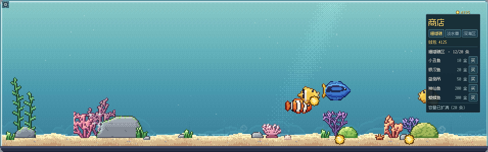

三座馆
横向一条长缸，切成三段
每段正好一屏宽，三区开局全开，滑过去就到。
- 珊瑚礁区
- 亮蓝绿，有阳光光柱。开局自带 8 条。
- 淡水草缸区
- 暖绿，光柱很淡。水草丛生，没有珊瑚。
- 深海区
- 近黑，光柱和焦散全关，礁石压成冷青。
- 容量
- 每区 8 条起步，扩到 12 要 300 乘展区序号。

玩法
点一下水面，鱼会自己来
挂件形态不打扰，所以整局的钱都是撒饵撒出来的。
- 点水面
- 撒一粒饵料
- 点金币
- 收进钱包
- 空格
- 展开 / 收起
- Esc
- 收起
- 拖 / 横滑
- 浏览整条缸
- P
- 截图
- 产币
- 金币落到沙上 2.5 秒后自己进钱包，不点也会收。
- 投食
- 最近的鱼加速游过去吃掉，接下来两分钟产币翻倍。
- 离线
- 最多按 8 小时结算，打开时底部给一行提示。
顺手试试：戳水里冒出来的泡泡，或者点一条鱼，它会吐一串泡再窜走。